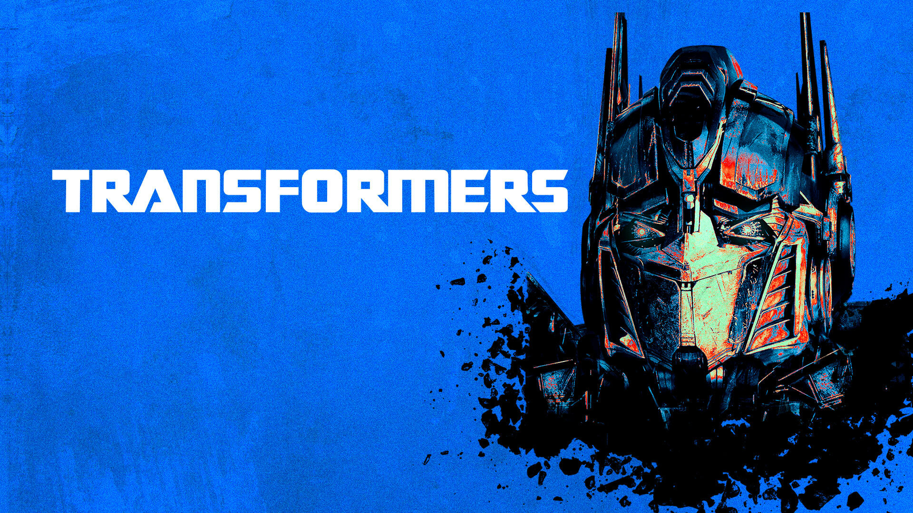
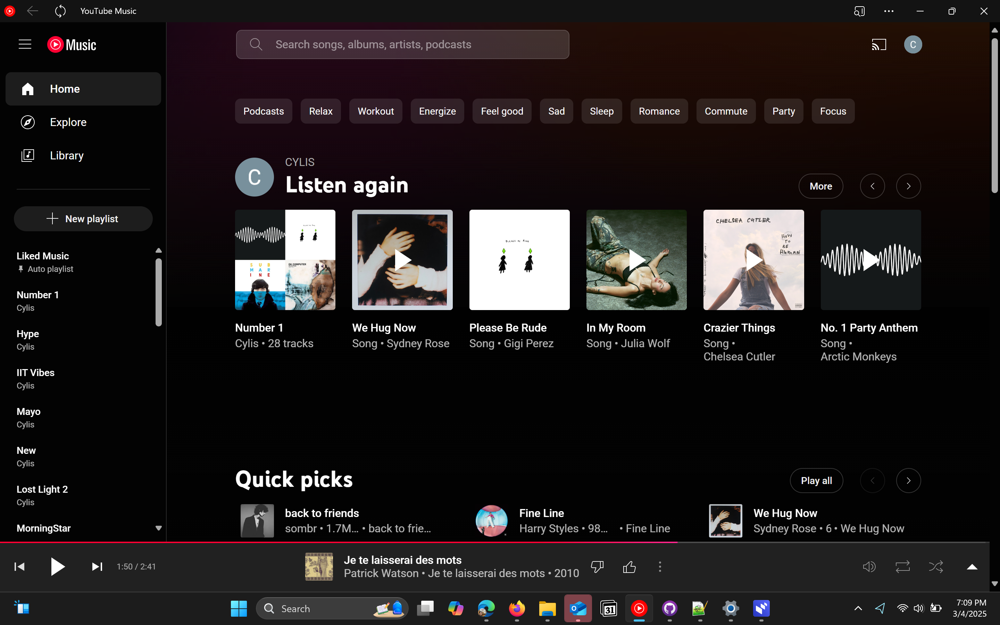

Hey everyone! My name is Omar Hernandez! I am a second year Information Technology and Managemnt Major who currenlty attends the Illiois Institute Of Technology! I am from the Chicago area, more specifically the northern suburbs of Highland Park. I've lived around here all my life and when the time came to choose a university, I was like, "why not go towards the city".
I enjoy very few things in this life considering I am a "creature of habbit". I don't really do much beside work, school, hanging out with my dog, listening to music and playing with my Transformers.
The reason I'm at IIT to be honest with you all is because I was a techie growing up. I loves watching phone reviews as a kid. Channel's like MKBHD, Pocketnow, Unbox Therapy were everything to me. Over the years, I have lost my touch and interest when it comes to technology, but hopefully I will get it back soon. Hopefully. In the next section, I will discuss two things that will flesh me out as a character, Transformers and Music. I would put more but that's about it.
I LOVE TRANSFORMERS. I just do. The the feeling is insane and will probably be the end of me lowkey. I fell in love with the franchise when I was 6 when the Cartoon Network series, "Transformers Animated" came out. I fell in love with the robotic characters and how they transformed into all sorts of both alien and earthly vehicles. When the movie came out in 2007, it was over from everyone.
After that movie came out, I bought every single toy, medium, merchandies, and beverage that existed and ever will exist. I own so many toys that I can't currently display them in my room all at once so most are in deep storage.
This franchise is everything to me. It's all I think about, plus will all the new exciting toys coming out, I genuinely see no end in sight, and is that a bad thing, maybe, but I'll figure it out.
I'm really into music. Personally, I find really boring without music, which is why you can see me around campus a lot with my headphones. I don't really know how to describe the music I like, but if I were to describe it, it would be "introspective". I like music that had a deeper meaning to it and usually the songs that have the deepest music have the most gut wrenching sound, which is what I love!
My favorite songs are "Terrible Things" by Chelsea Cutler, "Sailor Song" by Gigi Perez, and "About You" by the 1975.
